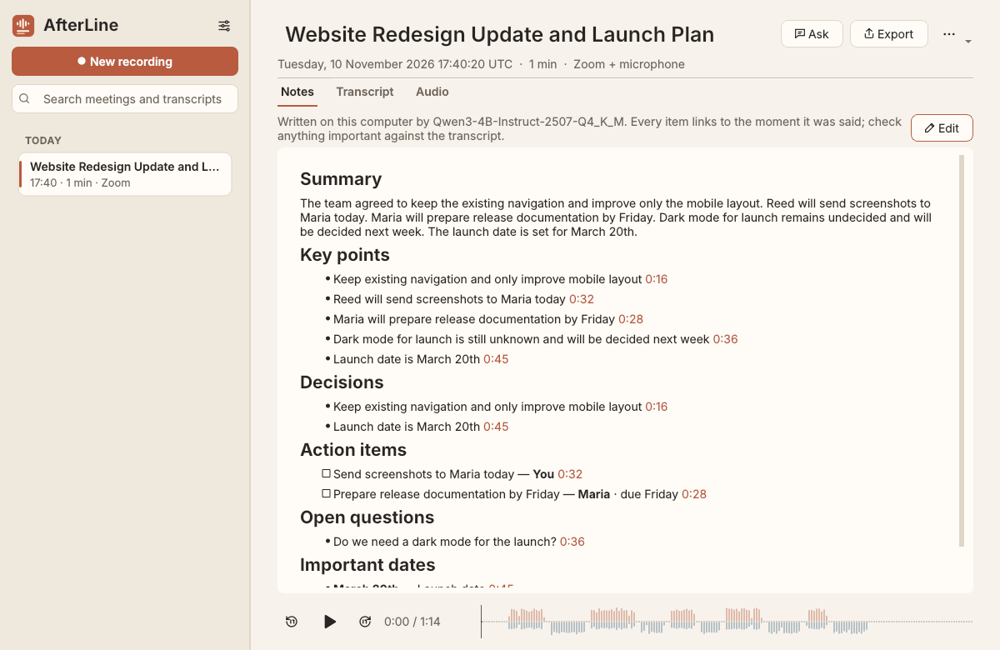
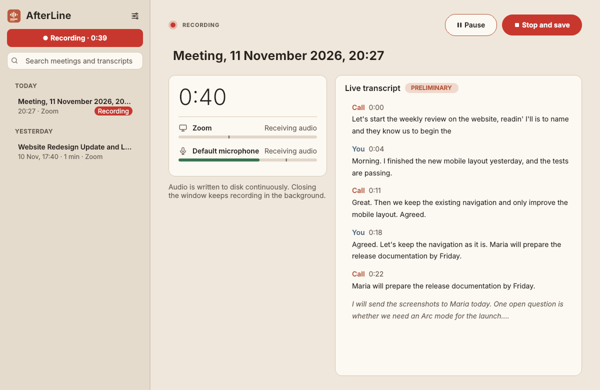
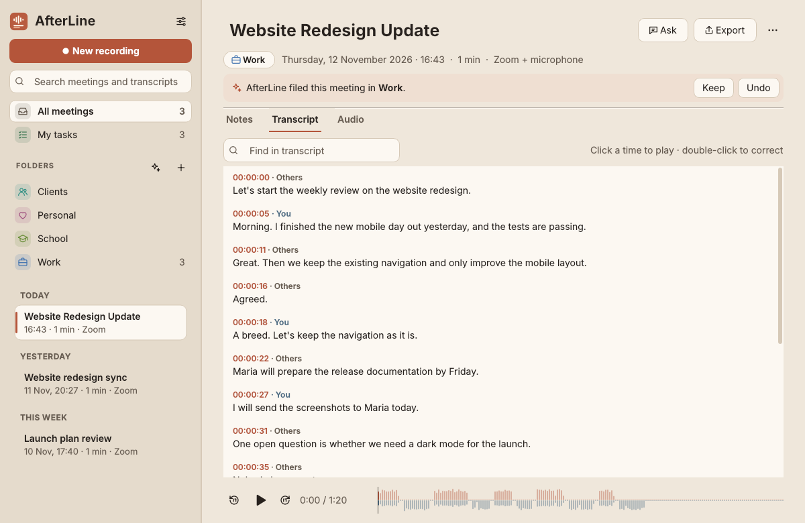
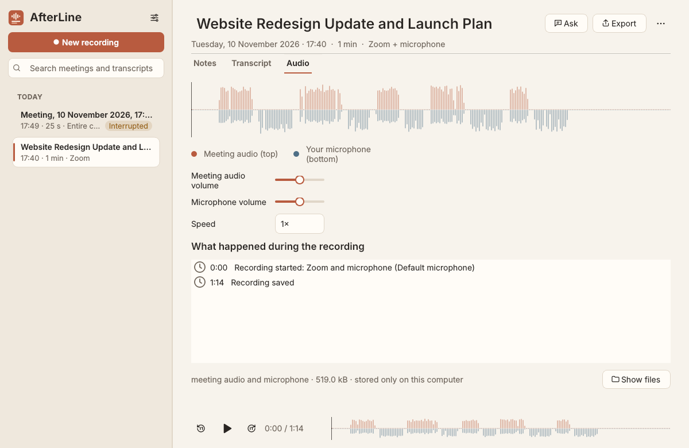
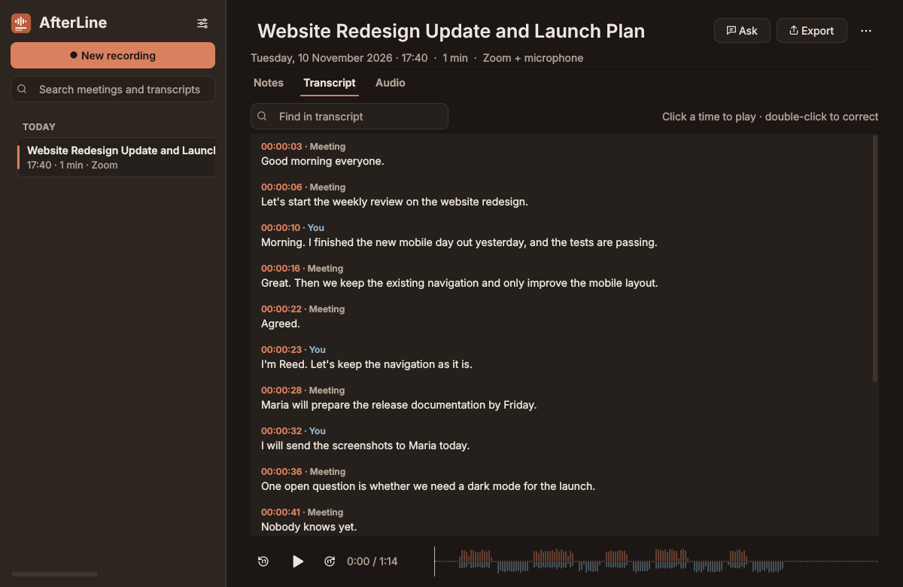

Record just the meeting
Choose the whole computer or a single application. Pick Firefox and only Firefox is recorded, even when the call reconnects. Music playing elsewhere stays out.
Linux · Open source · Private by design
AfterLine records your meetings from Zoom, Teams, Meet in your browser, Discord or any other app, then writes a full transcript and clear notes, all on your own computer.
Ubuntu · Linux Mint · Pop!_OS · Zorin OS · Debian · Fedora · Arch · EndeavourOS · Manjaro · AppImage

No account.
No cloud transcription.
Just your meetings, kept on your computer.
Features
Everything you need to keep a meeting, and nothing that gets in the way of having it.
Choose the whole computer or a single application. Pick Firefox and only Firefox is recorded, even when the call reconnects. Music playing elsewhere stays out.
Include your microphone, or don't. It is recorded separately, so the transcript knows which words were yours, and echo from your speakers is filtered out.
Watch it appear live while you talk, then get a careful version when you stop: timestamped, searchable and correctable. Click any line to hear that moment. English, Romanian and 97 more languages, transcribed offline with Whisper.
A summary, decisions, action items with owners and deadlines, open questions and dates. Each item links to its source, and anything the transcript does not support is left out.
“What did we decide about the website?” AfterLine answers from your transcripts, with links to where it was said, and tells you when your meetings don't cover something.
Audio is written to disk continuously. A crash, a power cut or an unplugged headset never costs you the meeting; AfterLine recovers what was recorded.




Performance
Recording takes almost nothing from your computer. Transcription and notes run afterwards at low priority, and pause completely while you record, so your call always comes first.
Security & privacy
Everything runs locally. Recording, transcription (whisper.cpp) and notes (llama.cpp) run on your computer. Meetings are never uploaded.
No account, no telemetry. AfterLine does not phone home. The only network access is downloading the AI models, once, when you ask, from Hugging Face; each file is checked against a published checksum.
Your files, in plain folders. Meetings live in ~/.local/share/AfterLine/meetings as
Ogg Opus audio, JSON and Markdown. Delete a meeting and it goes to your trash.
Check it yourself. After setup, turn off Wi‑Fi: recording, transcription, notes and search all keep working. The source code is open for anyone to audit.
Recordings are not encrypted by AfterLine; use your system's disk encryption on shared or portable computers. You are responsible for getting consent to record where the law requires it.
Security policy and how to report a problem ↗Download
Download the file for your distribution and open it with your software installer. On first launch, AfterLine helps you download its offline speech model (190 MB) and, optionally, its notes model (2.5 GB).
sudo apt install ./afterline_*.debsudo dnf install ./afterline-*.rpmsudo pacman -U afterline-*.pkg.tar.zstchmod +x AfterLine-*.AppImage, then open itx86-64 · Needs PipeWire (standard on current distributions) · 8 GB of memory, 16 GB recommended for notes · SHA-256 checksums · All releases ↗
These releases play sound through PulseAudio by default, and AfterLine records through PipeWire (the default on Ubuntu 22.10+, Mint 22, Fedora, Debian 12+ and Arch). AfterLine tells you if this applies to you. To switch, run:
sudo apt install pipewire-audio-client-libraries libspa-0.2-bluetooth wireplumber
systemctl --user --now disable pulseaudio.service pulseaudio.socket
systemctl --user mask pulseaudio
systemctl --user --now enable pipewire pipewire-pulse wireplumberthen log out and back in.
Download the model files on another computer and use “Import a model file” in AfterLine's settings. AfterLine verifies each file before using it.
Open source